Conditional formats
Applying conditional formats
In Excel, a conditional format is a format that is applied if the content of a cell meets some criterion but not otherwise. Such conditional formatting is generally straightforward to apply using the setAttribute() functions or the setConditionalFormat() function described here.
In Excel, conditional formats are dynamic. If the cell values change, the formats are updated based on application of the condition to the new values.
The examples of conditional formatting given here a mix of static and dynamic formats.
Static conditional formats apply formatting based on the current cell values at the time the format is set, but the formats are then static regardless of updates to cell values. They can be updated by re-running the conditional formatting functions described but otherwise remain unchanged. Static formats are created by applying the setAttribute() functions described above.
Dynamic conditional formatting, using the native Excel conditional format functionality, is possible using the setConditionalFormat() function, giving access to all of Excel's options.
Static conditional formats
As an example, a simple function to set true values in a range to use a bold green font color and false values to use a bold red color a could be defined as follows:
function trueorfalse(sheet, rng) # Use green or red font for true or false respectively
for c in rng
if !ismissing(sheet[c]) && sheet[c] isa Bool
XLSX.setFont(sheet, c, bold=true, color = sheet[c] ? "FF548235" : "FFC00000")
end
end
endApplying this function over any range will conditionally color cells green or red if they are true or false respectively:
trueorfalse(sheet, XLSX.CellRange("E3:L6"))Similarly, a function can be defined that fills any cells containing missing values with a grey color and have diagonal borders applied:
function blankmissing(sheet, rng) # Fill with grey and apply both diagonal borders on cells
for c in rng # with missing values
if ismissing(sheet[c])
XLSX.setFill(sheet, c; pattern = "solid", fgColor = "lightgrey")
XLSX.setBorder(sheet, c; diagonal = ["style" => "thin", "color" => "black"])
end
end
endThis can then be applied to a range of cells to conditionally apply the format:
blankmissing(sheet, XLSX.CellRange("B3:L6"))Dynamic conditional formats
XLSX.jl provides a function to create native Excel conditional formats that will be saved as part of an XLSXFile and which will update dynamically if the values in the cell range to which the formatting is applied are subsequently updated.
XLSX.setConditionalFormat(sheet, CellRange, :type; kwargs...)
Excel uses a range of :type values to describe these conditional formats and the same values are used here, as follows:
:cellIs:top10:aboveAverage:containsText:notContainsText:beginsWith:endsWith:timePeriod:containsErrors:notContainsErrors:containsBlanks:notContainsBlanks:uniqueValues:duplicateValues:expression:dataBar:colorScale:iconSet
Use of these different :types is illustrated in the following sections. For more details on the range of :type values and their associated keyword options, refer to XLSX.setConditionalFormat().
Cell Value
It is possible to format each cell in a range when the cell's value meets a specified condition using one of a number of built-in cell format options or using custom formatting. This group of formatting options represents the greatest range of conditional formatting options available in Excel and are probably the most often used. All the functions of Highlight Cells Rules and Top/Bottom Rules are provided.
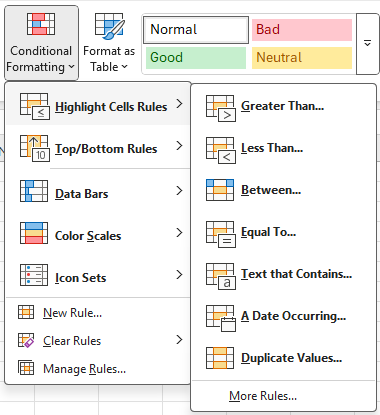 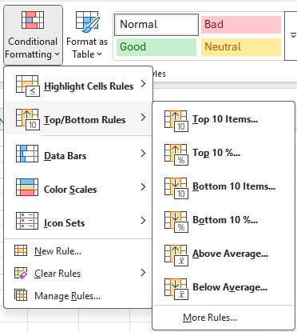
The following :type values are used to set conditional formats by making direct comparisons to a cell's value:
:cellIs:top10:aboveAverage:containsText:notContainsText:beginsWith:endsWith:timePeriod:containsErrors:notContainsErrors:containsBlanks:notContainsBlanks:uniqueValues:duplicateValues
Each of these formatting types needs a set of keyword options to fully define its operation. This can be exemplified by considering the :cellIs type. Like the other conditional formats in this group, :cellIs needs an operator keyword to define the test to use to determine whether or not to apply the formatting. Valid operator values for :cellIs are:
greaterThan(cell >value)greaterEqual(cell >=value)lessThan(cell <value)lessEqual(cell <=value)equal(cell ==value)notEqual(cell !=value)between(cell betweenvalueandvalue2)notBetween(cell not betweenvalueandvalue2)
Each of these need the keyword value to be specified and, for between and notBetween, value2 must also be specified.
Like all the cell value formatting types, :cellIs can use one of six built-in Excel formats, as illustrated here for the greaterThan comparison.
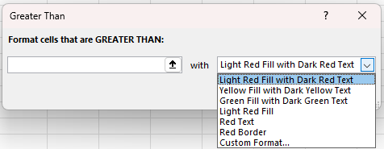
These six built-in formatting options are available by name in XLSX.jl by specifying the dxStyle keyword with one of the following values:
redfilltextyellowfilltextgreenfilltextredfillredtextredborder
Thus, for example, to create a simple XLSXFile from scratch and then apply some :cellIs conditional formats to its cells:
julia> columns = [ [1, 2, 3, 4], ["Hey", "You", "Out", "There"], [10.2, 20.3, 30.4, 40.5] ]
3-element Vector{Vector}:
[1, 2, 3, 4]
["Hey", "You", "Out", "There"]
[10.2, 20.3, 30.4, 40.5]
julia> colnames = [ "integers", "strings", "floats" ]
3-element Vector{String}:
"integers"
"strings"
"floats"
julia> f=XLSX.newxlsx()
XLSXFile("C:\...\blank.xlsx") containing 1 Worksheet
sheetname size range
-------------------------------------------------
Sheet1 1x1 A1:A1
julia> s=f[1]
1×1 XLSX.Worksheet: ["Sheet1"](A1:A1)
julia> XLSX.writetable!(s, columns, colnames)
julia> s[1:5, 1:3]
5×3 Matrix{Any}:
"integers" "strings" "floats"
1 "Hey" 10.2
2 "You" 20.3
3 "Out" 30.4
4 "There" 40.5
julia> XLSX.setConditionalFormat(s, "A2:A5", :cellIs; # Cells with a value > 2 to have red text and light red fill.
operator="greaterThan",
value="2",
dxStyle="redfilltext")
0
julia> XLSX.setConditionalFormat(s, "B2:B5", :containsText; # Cells with text containing "u" to have green text and light green fill.
value="u",
dxStyle="greenfilltext")
0
julia> XLSX.setConditionalFormat(s, "C2:C5", :top10; # Cells with values in the top 10% of values in the range to have a red border.
operator ="topN%",
value="10"
dxStyle="redborder")
0
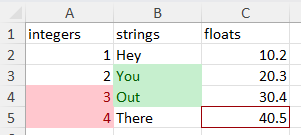
Alternatively, it is possible to specify custom format options to match the options offered in Excel under the Custom Format... option:

In the image above, the font name and size selectors are greyed out. Excel limits the formatting attributes that can be set in a conditional format. It is not possible to set the size or name of a font and neither is it possible to set any of the cell alignment attributes. Diagonal borders cannot be set either.
Although it is not a limitation of Excel, for simplicity this function sets all the border attributes for each side of a cell to be the same.
For example, starting with the same simple XLSXFile as above, we can apply the following custom formats:
julia> XLSX.setConditionalFormat(s, "A2:A5", :cellIs;
operator="greaterThan",
value="2",
font=["color" => "coral", "bold"=>"true"],
fill=["pattern"=>"solid", "bgColor"=>"cornsilk"],
border=["style"=>"dashed", "color"=>"orangered4"],
format=["format"=>"0.000"])
0
julia> XLSX.setConditionalFormat(s, "B2:B5", :containsText;
value="u",
font=["color" => "steelblue4", "italic"=>"true"],
fill=["pattern"=>"darkTrellis", "fgColor"=>"lawngreen", "bgColor"=>"cornsilk"],
border=["style"=>"double", "color"=>"magenta3"])
0
julia> XLSX.setConditionalFormat(s, "C2:C5", :top10;
operator ="topN%",
value="10",
font=["color" => "magenta3", "strike"=>"true"],
fill=["pattern"=>"lightVertical", "fgColor"=>"lawngreen", "bgColor"=>"cornsilk"],
border=["style"=>"double", "color"=>"cyan"])
0
julia> XLSX.getConditionalFormats(s)
3-element Vector{Pair{XLSX.CellRange, NamedTuple}}:
C2:C5 => (type = "top10", priority = 3)
B2:B5 => (type = "containsText", priority = 2)
A2:A5 => (type = "cellIs", priority = 1)
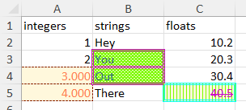
Each of the conditional format types in the cell value group take similar keyword options but the specific details vary for each. For more details, refer to XLSX.setConditionalFormat().
Expressions
It is possible to use an Excel formula directly to determine whether to apply a conditional format. Any expression that evaluates to true or false can be used.
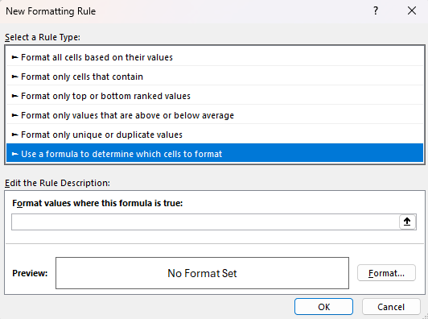
For example, to compare one column with another and apply a conditional format accordingly:
julia> f=XLSX.newxlsx()
XLSXFile("C:\...\blank.xlsx") containing 1 Worksheet
sheetname size range
-------------------------------------------------
Sheet1 1x1 A1:A1
julia> s=f[1]
1×1 XLSX.Worksheet: ["Sheet1"](A1:A1)
julia> XLSX.writetable!(s, [rand(10), rand(10), rand(10), rand(10)], ["col1", "col2", "col3", "col4"])
julia> s[:]
11×4 Matrix{Any}:
"col1" "col2" "col3" "col4"
0.810579 0.13742 0.0146856 0.654739
0.169043 0.623955 0.713874 0.103253
0.198619 0.19622 0.0818595 0.863316
0.353214 0.0949461 0.961917 0.812889
0.343781 0.0957323 0.061183 0.822921
0.34115 0.243949 0.527914 0.758945
0.161748 0.744446 0.119521 0.52732
0.39707 0.284588 0.501409 0.374944
0.327938 0.191197 0.943983 0.755799
0.0314949 0.560541 0.526068 0.45253
julia> XLSX.setConditionalFormat(s, "A2:A10", :expression; formula = "A2>B2", dxStyle = "redfilltext")
0
julia> XLSX.setConditionalFormat(s, "C2:D10", :expression; formula = "C2>\$B2", dxStyle = "greenfilltext")
0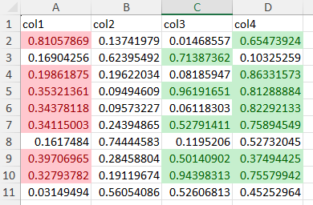
Column A uses relative referencing. Columns C and D use an absolute reference for the column but not the row of the comparison reference.
The following example uses absolute references on rows and compares the average of each column with the average of the preceding column.
julia> f=XLSX.newxlsx()
XLSXFile("C:\...\blank.xlsx") containing 1 Worksheet
sheetname size range
-------------------------------------------------
Sheet1 1x1 A1:A1
julia> s=f[1]
1×1 XLSX.Worksheet: ["Sheet1"](A1:A1)
julia> XLSX.writetable!(s, [rand(10).*1000, rand(10).*1000, rand(10).*1000, rand(10).*1000], ["2022", "2023", "2024", "2025"])
julia> XLSX.setConditionalFormat(s, "B2:D11", :expression; formula = "average(B\$2:B\$11) > average(A\$2:A\$11)", dxStyle = "greenfilltext")
0
julia> XLSX.setConditionalFormat(s, "B2:D11", :expression; formula = "average(B\$2:B\$11) < average(A\$2:A\$11)", dxStyle = "redfilltext")
0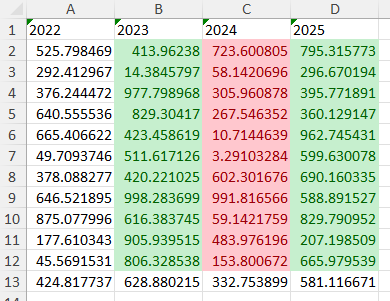
(Row 13 above is the average of each column, calculated in Excel)
When a formula uses relative references, the relative position (offset) of the reference to the base cell in the range to which the condition is applied is used consistently throughout the range. This is illustrated in the following example:
julia> f=XLSX.newxlsx()
XLSXFile("C:\...\blank.xlsx") containing 1 Worksheet
sheetname size range
-------------------------------------------------
Sheet1 1x1 A1:A1
julia> s=f[1]
1×1 XLSX.Worksheet: ["Sheet1"](A1:A1)
julia> for i=1:10; for j=1:10; s[i, j] = i*j; end; end
julia> XLSX.setConditionalFormat(s, "A1:E5", :expression; formula = "E5 < 50", dxStyle = "redfilltext")
0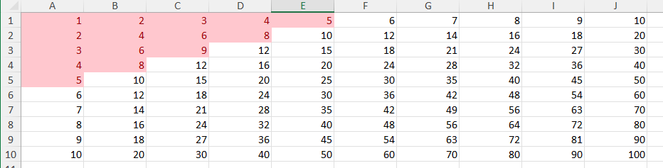
The format applied in cell A1 is determined by comparison of cell E5 to the value 50. In B2 it is based on cell F6, in C3, on cell G7 and so on throughtout the range.
Text based comparisons in Excel are not case sensitive by default, but can be forced to be so:
julia> f=XLSX.newxlsx()
XLSXFile("C:\...\blank.xlsx") containing 1 Worksheet
sheetname size range
-------------------------------------------------
Sheet1 1x1 A1:A1
julia> s=f[1]
1×1 XLSX.Worksheet: ["Sheet1"](A1:A1)
julia> s[1:3,1:3]="HELLO WORLD"
"HELLO WORLD"
julia> s["A1"] = "Hello World"
"Hello World"
julia> s["B2"] = "Hello World"
"Hello World"
julia> s["C3"] = "Hello World"
"Hello World"
julia> XLSX.setConditionalFormat(s, "A1:A3", :expression; formula = "A1=\"hello world\"", dxStyle = "redfilltext")
0
julia> XLSX.setConditionalFormat(s, "B1:B3", :expression; formula = "B1=\"HELLO WORLD\"", dxStyle = "redfilltext")
0
julia> XLSX.setConditionalFormat(s, "C1:C3", :expression; formula = "exact(\"Hello World\", C1)", dxStyle = "greenfilltext")
0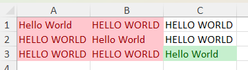
Data Bar
A :dataBar conditional format can be applied to a range of cells. In Excel there are twelve built-in data bars available, but it is possible to customise many elements of these.
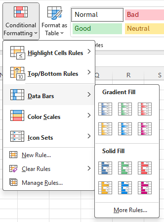
In XLSX.jl, the twelve built-in data bars are named as follows (layout follows image)
| Gradient fill | bluegrad | greengrad | redgrad |
| orangegrad | lightbluegrad | purplegrad | |
| Solid fill | blue | green | red |
| orange | lightblue | purple |
Choose one of these data bars by name using the databar keyword. If no databar is specified, bluegrad is the default choice. For example
julia> f=XLSX.newxlsx()
XLSXFile("C:\...\blank.xlsx") containing 1 Worksheet
sheetname size range
-------------------------------------------------
Sheet1 1x1 A1:A1
julia> s=f[1]
1×1 XLSX.Worksheet: ["Sheet1"](A1:A1)
julia> s[1:10, 1]=1:10
1:10
julia> s[1:10, 3]=1:10
1:10
julia> XLSX.setConditionalFormat(s, "A1:A10", :dataBar) # Defaults to `databar="bluegrad"`
0
julia> XLSX.setConditionalFormat(s, "C1:C10", :dataBar; databar="orange")
0
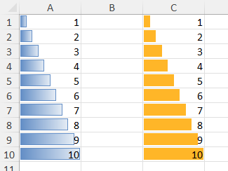
All of the options provided by Excel can be adjusted using the provided keyword options.
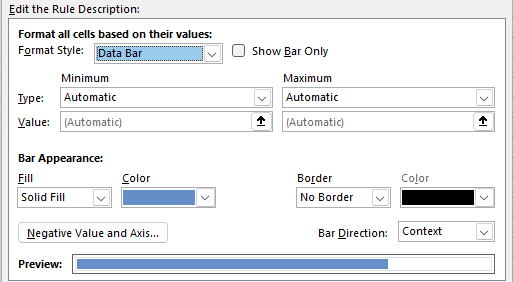
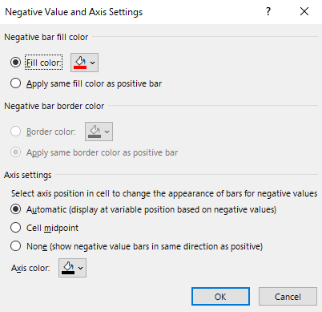
For example, the end points of the bar scale can be defined by setting the min_type and max_type keywords to num (for an absolute number value), percent, percentile, formula or min or max. The default type is automatic.
For the first three type options, a value must also be given by setting min_val, max_val. The value may be taken from a cell by setting min_val, max_val to a cell reference. When the type is set to formula, any valid formula yielding a value can be given. Cell references must use absolute referencing. Types min and max set the scale endpoints to be exactly the minimum and maximum values of the data in the cell range whereas using automatic allows Excel flexibility to make minor adjustments to these endpoints, e.g. to improve appearance.
julia> f=XLSX.newxlsx()
XLSXFile("C:\...\blank.xlsx") containing 1 Worksheet
sheetname size range
-------------------------------------------------
Sheet1 1x1 A1:A1
julia> s=f[1]
1×1 XLSX.Worksheet: ["Sheet1"](A1:A1)
julia> s[1:10, 5]=1:10
1:10
julia> s[1:10, 1]=1:10
1:10
julia> s[1:10, 3]=1:10
1:10
julia> XLSX.setConditionalFormat(s, "A1:A10", :dataBar)
0
julia> XLSX.setConditionalFormat(s, "C1:C10", :dataBar; databar="purple", min_type="num", max_type="num", min_val="2", max_val="8")
0
julia> XLSX.setConditionalFormat(s, "E1:E10", :dataBar; databar="greengrad", min_type="percent", max_type="percent", min_val="35", max_val="65")
0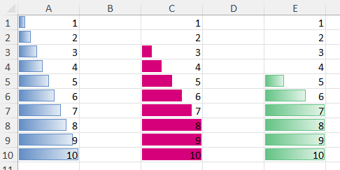
Choose whether to hide values using showVal="false", convert a gradient fill to solid (or vice versa) with gradient="false" (gradient="true") and add borders to data bars with borders="true".
julia> XLSX.setConditionalFormat(s, "A1:A10", :dataBar)
0
julia> XLSX.setConditionalFormat(s, "C1:C10", :dataBar, showVal="false", gradient="false")
0
julia> XLSX.setConditionalFormat(s, "E1:E10", :dataBar; databar=purple, borders="true", gradient="true")
0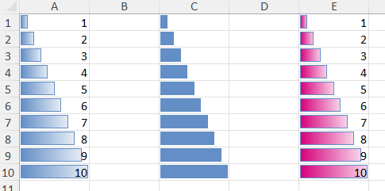
Change bar colors using fill_col= and border colors using border_col=. Colors are specified using an 8-digit hexadecimal as "FFRRGGBB" or using any named color from Colors.jl.
By default, negative values are shown with red bars and borders. Override these defaults by setting sameNegFill = "true"and sameNegBorders="true" to use the same colors as positive bars. Alternatively, to use any available color, set neg_fill_col= and neg_border_col=.
julia> XLSX.setConditionalFormat(s, "A1:A11", :dataBar)
0
julia> XLSX.setConditionalFormat(s, "C1:C11", :dataBar; sameNegFill="true", sameNegBorders="true")
0
julia> XLSX.setConditionalFormat(s, "E1:E11", :dataBar; fill_col="cyan", border_col="blue", neg_fill_col="lemonchiffon1", neg_border_col="goldenrod4")
0
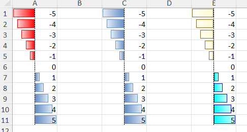
By default, Excel positions the axis automatically, based on the range of the cell data. Control the location of the axis using axis_pos = "middle" to locate it in the middle of the column width or axis_pos = "none" to remove the axis. Excel chooses the direction of the bars according to the context of the cell data. Force (postive) bars to go leftToRight or rightToLeft using the direction key word. Change the color of the axis with axis_col.
julia> s[1:10, 1]=1:10
1:10
julia> s[1:10,3]=-5:4
-5:4
julia> s[1:10,5]=1:10
1:10
julia> XLSX.setConditionalFormat(s, "A1:A10", :dataBar)
0
julia> XLSX.setConditionalFormat(s, "C1:C10", :dataBar; direction="rightToLeft", axis_pos="middle", axis_col="magenta")
0
julia> XLSX.setConditionalFormat(s, "E1:E10", :dataBar; direction="leftToRight", min_type="num", min_val="-5", axis_pos="none")
0
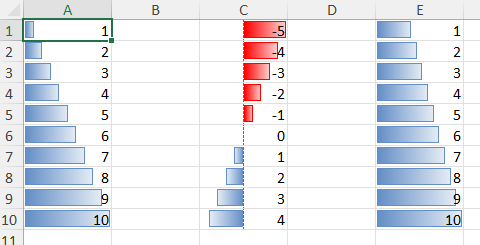
Color Scale
It is possible to apply a :colorScale formatting type to a range of cells. In Excel there are twelve built-in color scales available, but it is possible to create custom color scales, too.
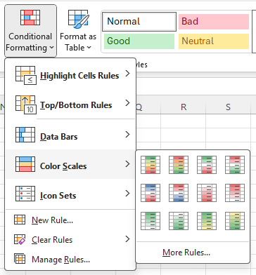
In XLSX.jl, the twelve built-in scales are named by their end/mid/start colors as follows (layout follows image)
| greenyellowred | redyellowgreen | greenwhitered | redwhitegreen |
| bluewhitered | redwhiteblue | whitered | redwhite |
| greenwhite | whitegreen | greenyellow | yellowgreen |
The default colorscale is greenyellow. To use a different built-in color scale, specify the name using the keyword colorscale, thus:
julia> XLSX.setConditionalFormat(f["Sheet1"], "A1:F12", :colorScale) # Defaults to the `greenyellow` built-in scale.
0
julia> XLSX.setConditionalFormat(f["Sheet1"], "A13:C18", :colorScale; colorscale="whitered")
0
julia> XLSX.setConditionalFormat(f["Sheet1"], "D13:F18", :colorScale; colorscale="bluewhitered")
0A custom color scale may be defined by the colors at each end of the scale and (optionally) by some mid-point color, too. Colors can be specified using hex RGB values or by name using any of the colors in Colors.jl.
In Excel, the colorScale options (for a 3 color scale) look like this:
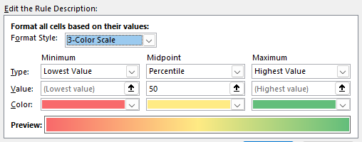
The end points (and optional mid-point) can be defined using an absolute number (num), a percent, a percentile or as a min or max. For the first three options, a value must also be given. The value may be taken from a cell by setting min_val, mid_val or max_val to a cell reference. Thus, you can apply a custom 3-color scale using, for example:
julia> XLSX.setConditionalFormat(f["Sheet1"], "A13:F22", :colorScale;
min_type="num",
min_val="2",
min_col="tomato",
mid_type="num",
mid_val="6",
mid_col="lawngreen",
max_type="num",
max_val="10",
max_col="cadetblue"
)
0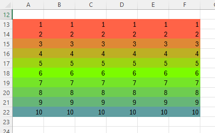
Icon Set
It is possible to apply an :iconSet formatting type to a range of cells. In Excel there are twenty built-in icon sets available, but it is possible to create a custom icon set from the 52 built-in icons, too.
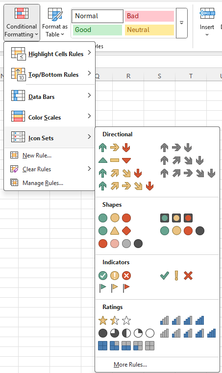
In XLSX.jl, the twenty built-in icon sets are named as follows (layout follows image)
| Directional | 3Arrows | 3ArrowsGray |
| 3Triangles | 4ArrowsGray | |
| 4Arrows | 5ArrowsGray | |
| 5Arrows | ||
| Shapes | 3TrafficLights | 3TrafficLights2 |
| 3Signs | 4TrafficLights | |
| 4BlackToRed | ||
| Indicators | 3Symbols | 3Symbols2 |
| 3Flags | ||
| Ratings | 3Stars | 4Ratings |
| 5Quarters | 5Ratings | |
| 5Boxes |
Choose one of these icon sets by name using the iconset keyword. If no iconset is specified, 3TrafficLights is the default choice. For example
julia> f=XLSX.newxlsx()
XLSXFile("C:\...\blank.xlsx") containing 1 Worksheet
sheetname size range
-------------------------------------------------
Sheet1 1x1 A1:A1
julia> s=f[1]
1×1 XLSX.Worksheet: ["Sheet1"](A1:A1)
julia> s[1:10, 1]=1:10
1:10
julia> XLSX.setConditionalFormat(s, "A1:A10", :iconSet)
0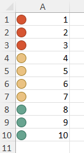
All of the options to control an iconSet in Excel are available. The iconSet options (for a 4-icon set) look like this:
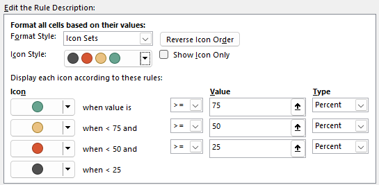
Each icon set includes a default set of thresholds defining which symbol to use. These relate the cell value to the range of values in the cell range to which the conditional format is being applied. This can be illustrated (for a 4-icon set) as follows:
Range ┌─────────────────┬─────────────────┬─────────────────┬────────────────┐ Range
Minimum ->│ Icon 1 │ Icon 2 │ Icon 3 │ Icon 4 │<- Maximum
`min_val` `mid_val` `max_val`
threshold threshold thresholdThe starting value for the first icon is always the minimum value of the range, and the stopping value for the last icon is always the maximum value in the range. No cells will have values for which an icon cannot be assigned. The internal thresholds for transition from one icon to the next are defined (in a 3-icon set) by min_val and max_val. In a 4-icon set, an additional threshold, mid-val, is required and in a 5-icon set, mid2_val is needed as well.
The type of these thresholds can be defined in terms of percent (of the range), percentile or simply with a num (number) (e.g. as min_type="percent"). For each threshold, the value can either be given as a number (as a String) or as a simple cell reference. Alternatively, specifying the type as formula allows the value to be determined by any valid Excel formula.
Cell references used to define threshold values in an iconSet MUST always be given as absolute cell references (e.g. "\$A\$4"). Relative references should not be used.
Using the example above, change both the type and value of the thresholds like this:
julia> XLSX.setConditionalFormat(s, "A1:A10", :iconSet;
min_type="num", max_type="num",
min_val="2", max_val="9")
0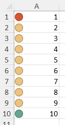
To suppress the values in cells and just show the icons, use showVal="false", to reverse the icon ordering use reverse="true" and to change the default comparison from >= to > set min_gte="false" (and equivalent for mid, mid2 and max):
julia> XLSX.writetable!(s, [collect(1:10), collect(1:10), collect(1:10), collect(1:10)],
["normal", "showVal=\"false\"", "reverse=\"true\"", "min_gte=\"false\""])
julia> XLSX.setConditionalFormat(s, "A2:A11", :iconSet;
min_type="num", max_type="num",
min_val="3", max_val="8")
0
julia> XLSX.setConditionalFormat(s, "B2:B11", :iconSet;
min_type="num", max_type="num",
min_val="3", max_val="8",
showVal="false")
0
julia> XLSX.setConditionalFormat(s, "C2:C11", :iconSet;
min_type="num", max_type="num",
min_val="3", max_val="8",
reverse="true")
0
julia> XLSX.setConditionalFormat(s, "D2:D11", :iconSet;
min_type="num", max_type="num",
min_val="3", max_val="8",
min_gte="false", max_gte="false")
0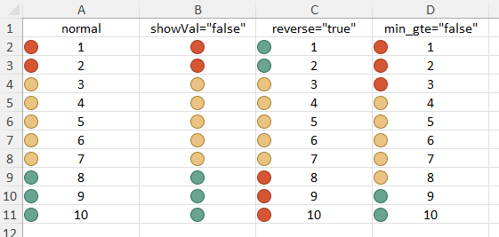
Create a custom icon set by specifying iconset="Custom". The icons to use in the custom set are defined with icon_list keyword, which takes a vector of integers defining which of the 52 built in icons to use. Use of the val and type keywords dictate the number of icons to use. If mid_type and mid_val are both defined, but not mid2_val or mid2_type, then a 4-icon set will be used. If both sets of keywords are defined, a 5-icon set is used and if neither is set, a 3-icon set will be used.
This is illustrated with code below, which produces a key defining which integer to use in icon_list to represent any desired icon:
using XLSX
f=XLSX.newxlsx()
s=f[1]
for i = 0:3
for j=1:13
s[i+1,j]=i*13+j
end
end
for j=1:13
XLSX.setConditionalFormat(s, 1:4, j, :iconSet; # Create a custom 4-icon set in each column.
iconset="Custom",
icon_list=[j, 13+j, 26+j, 39+j],
min_type="percent", mid_type="percent", max_type="percent",
min_val="25", mid_val="50", max_val="75"
)
end
XLSX.setColumnWidth(s, 1:13, width=6.4)
XLSX.setRowHeight(s, 1:4, height=27.75)
XLSX.setAlignment(s, "A1:M4", horizontal="center", vertical="center")
XLSX.setBorder(s, "A1:M4", allsides = ["style"=>"thin","color"=>"black"])
XLSX.writexlsx("iconKey.xlsx", f, overwrite=true)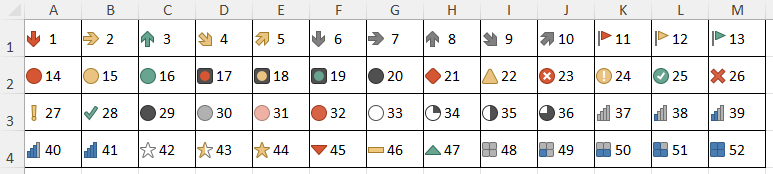
Specifying too few icons in icon_list throws an error while any extra will simply be ignored.
Cell references in conditional formats
Cell Ranges
Cell ranges for conditional formats are always absolute refences. The specified range to which a conditional format is to be applied is always treated as being based upon absolute cell references so that, for example
julia> XLSX.setConditionalFormat(s, "A2:C5", :colorScale; colorscale="greenyellow")will be converted automatically to the range "$A$2:$C$5" by Excel itself. There is therefore no need to specify absolute cell ranges when calling setCondtionalFormat()
Relative and absolute cell references
Cell references used to specify value or value2 or in any formula (for :expression type conditional formats only) may be either absolute or relative. As in Excel, an absolute reference is defined using a $ prefix to either or both the row or the column part of the cell reference but here the $ must be appropriately escaped. Thus:
value = "B2" # relative reference
value = "\$B\$2" # (escaped) absolute referenceThe cell used in a comparison is adjusted for each cell in the range if a relative reference is used. This is illustrated in the following example. Cells in column A are referenced to column B using a relative reference, meaning A2 is compared with B2 but A3 is compared with B3 and so on until A5 is compared with B5. In contrast, column B is referenced to cell C2 using an absolute reference. Each cell in column B is compared with cell C2.
julia> f=XLSX.newxlsx()
XLSXFile("C:\...\blank.xlsx") containing 1 Worksheet
sheetname size range
-------------------------------------------------
Sheet1 1x1 A1:A1
julia> s=f[1]
1×1 XLSX.Worksheet: ["Sheet1"](A1:A1)
julia> col1=rand(5)
5-element Vector{Float64}:
0.6283728884101448
0.7516580026008692
0.2738854683970795
0.13517788102005834
0.4659468387663539
julia> col2=rand(5)
5-element Vector{Float64}:
0.7582186445697804
0.739539172599636
0.4389109821689414
0.14156225872248773
0.10715394525726485
julia> XLSX.writetable!(s, [col1, col2],["col1", "col2"])
julia> s["C2"]=0.5
0.5
julia> s[:]
6×3 Matrix{Any}:
"col1" "col2" missing
0.628373 0.758219 0.5
0.751658 0.739539 missing
0.273885 0.438911 missing
0.135178 0.141562 missing
0.465947 0.107154 missing
julia> XLSX.setConditionalFormat(s, "A2:A6", :cellIs; operator="greaterThan", value="B2", dxStyle="redfilltext")
0
julia> XLSX.setConditionalFormat(s, "B2:B6", :cellIs; operator="greaterThan", value="\$C\$2", dxStyle="greenfilltext")
0
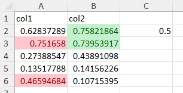
It is not possible to use relative cell references in conditional format types :dataBar, :colorScale or :iconSet.
Excel permits cell references to cells in other sheets for comparisons in conditional formats (e.g. "OtherSheet!A1"), but this is handled differently internally than references within the same sheet. This functionality is not universally implemented in XLSX.jl yet.
Overlaying conditional formats
It is possible to overlay multiple conditional formats over each other in a cell range or even in different, overlapping cell ranges. Starting with a table of integers, we can apply three different conditional formats sequentially. Excel applies these in priority order (priority 1 is higher priority than priority 2) which is the same as the order in which they were defined with setConditionalFormat.
julia> s[1:5, 1:3]
5×3 Matrix{Any}:
"first" "middle" "last"
1 15 9
12 6 10
3 17 11
14 8 2
julia> XLSX.setConditionalFormat(f["Sheet1"], "A2:C5", :colorScale; colorscale="greenyellowred")
0
julia> XLSX.setConditionalFormat(s, "A2:C5", :top10;
operator ="topN",
value="3",
font=["color"=>"magenta3", "strike"=>"true"],
fill=["pattern"=>"lightVertical", "fgColor"=>"lawngreen", "bgColor"=>"cornsilk"],
border=["style"=>"double", "color"=>"cyan"])
0
julia> XLSX.setConditionalFormat(s, "A2:A5", :cellIs;
operator="lessThan",
value="2",
font=["color"=>"coral", "bold"=>"true"],
fill=["pattern"=>"lightHorizontal", "fgColor"=>"cornsilk"],
border=["style"=>"dashed", "color"=>"orangered4"])
0
julia> XLSX.getConditionalFormats(s)
3-element Vector{Pair{XLSX.CellRange, NamedTuple}}:
A2:A5 => (type = "cellIs", priority = 3)
A2:C5 => (type = "colorScale", priority = 1)
A2:C5 => (type = "top10", priority = 2)
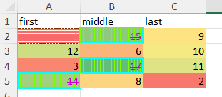
When applying multiple overlayed formats, it is possible to make the formatting stop if any cell meets one of the conditions, so that lower proirity conditional formats are not applied to that cell. This is achieved with the stopIfTrue keyword. It is not possible to apply stopIfTrue to :dataBar, :colorScale or :iconSet types.
The example below illustrates how stopIfTrue is used to stop further conditional formats from being applied to cells to which red borders are applied:
julia> s[1:5, 1:3]
5×3 Matrix{Any}:
"first" "middle" "last"
1 15 9
12 6 10
3 17 11
14 8 2
julia> XLSX.setConditionalFormat(s, "A2:C5", :cellIs; # No further conditions will be evaluated if this condition is met.
operator ="greaterThan",
value="9",
stopIfTrue="true",
dxStyle = "redborder")
0
julia> XLSX.setConditionalFormat(s, "A2:C5", :top10; # Won't apply if the max value in the range is > 9.
operator ="topN",
value="1",
dxStyle = "redfilltext")
0
julia> XLSX.setConditionalFormat(s, "A2:C5", :colorScale; colorscale="greenyellow") # Won't apply to any cell with a value > 9
0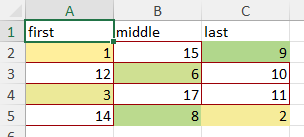
Overlaying the same three conditional formats without setting the stopIfTrue option will result in the following, instead:
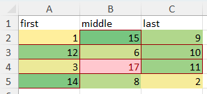
It is possible to overlay :colorScales, :dataBars and :iconSets in the same or overlapping cell ranges.
julia>
XLSXFile("C:\...\blank.xlsx") containing 1 Worksheet
sheetname size range
-------------------------------------------------
Sheet1 1x1 A1:A1
julia> s=f[1]
1×1 XLSX.Worksheet: ["Sheet1"](A1:A1)
julia> XLSX.writetable!(s, [rand(10),rand(10),rand(10),rand(10),rand(10),rand(10),rand(10)],["col1","col2","col3","col4","col5","col6","col7"])
julia> XLSX.setConditionalFormat(s, "A5:E8", :dataBar; direction="rightToLeft")
0
julia> XLSX.setConditionalFormat(s, "C5:G8", :iconSet; iconset="5Arrows")
0
julia> XLSX.setConditionalFormat(s, "C2:E11", :colorScale; colorscale="greenyellowred")
0
julia> XLSX.setFormat(s, "A2:G11"; format="#0.00")
-1
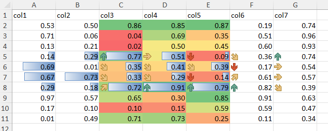